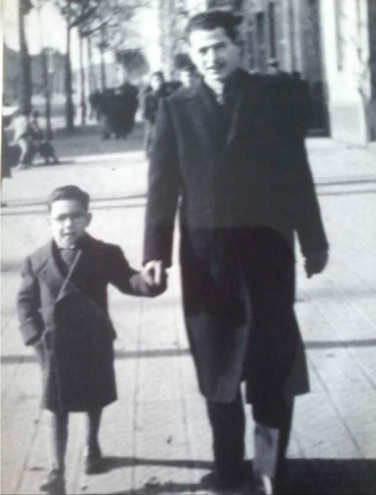
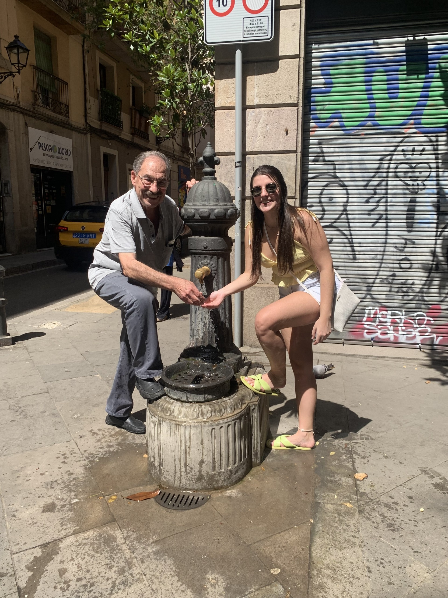

Minha conexão com Barcelona começou muito antes de eu pisar na cidade. Meu avô, Angel Lopez Abad, pai do meu pai, nasceu em Barcelona em 1939. Viveu lá com seus pais durante um período difícil, logo após a guerra. Aos 10 anos, ele e seu pai, Gil, vieram para o Brasil em busca de uma nova vida. Foi aqui que ele cresceu, estudou e construiu suas raízes. Mesmo distante, Barcelona nunca deixou de fazer parte da vida dele. Ao longo dos anos, com a chegada dos netos, ele sempre compartilhou histórias cheias de carinho sobre sua cidade natal — histórias que despertaram em mim uma curiosidade e um sentimento que eu ainda nem entendia.

Em 2022, tivemos a oportunidade de viver algo especial: viajamos em família para Barcelona. Foi mais do que uma viagem — foi um reencontro com nossas origens. Conhecemos a casa onde meu avô morou, que permanece praticamente intacta há mais de 70 anos. Visitamos a escola onde ele estudava e até a “biquinha” onde ele bebia água quando criança. Foi como caminhar dentro da história da nossa própria família. Dois anos depois, em 2024, realizei um sonho pessoal: morei por 5 meses em Barcelona, a terra do meu avô. Durante esse tempo, pude viver a cidade de verdade — não como turista, mas como alguém que faz parte dela. Conheci novos lugares, revisitei memórias e criei as minhas próprias. Esse site nasce justamente disso: da vontade de compartilhar um pouco dessa experiência. Barcelona deixou de ser apenas um destino e se tornou uma parte essencial da minha história — um lugar onde vivi, trabalhei, aprendi e me transformei.
